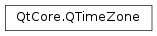

QTimeZone¶
Synopsis¶
Functions¶
- def
__eq__(other) - def
__ne__(other) - def
abbreviation(atDateTime) - def
comment() - def
country() - def
daylightTimeOffset(atDateTime) - def
displayName(atDateTime[, nameType=QTimeZone.DefaultName[, locale=QLocale()]]) - def
displayName(timeType[, nameType=QTimeZone.DefaultName[, locale=QLocale()]]) - def
hasDaylightTime() - def
hasTransitions() - def
id() - def
isDaylightTime(atDateTime) - def
isValid() - def
nextTransition(afterDateTime) - def
offsetData(forDateTime) - def
offsetFromUtc(atDateTime) - def
previousTransition(beforeDateTime) - def
standardTimeOffset(atDateTime) - def
swap(other) - def
transitions(fromDateTime, toDateTime)
Static functions¶
- def
availableTimeZoneIds() - def
availableTimeZoneIds(country) - def
availableTimeZoneIds(offsetSeconds) - def
ianaIdToWindowsId(ianaId) - def
isTimeZoneIdAvailable(ianaId) - def
systemTimeZone() - def
systemTimeZoneId() - def
utc() - def
windowsIdToDefaultIanaId(windowsId) - def
windowsIdToDefaultIanaId(windowsId, country) - def
windowsIdToIanaIds(windowsId) - def
windowsIdToIanaIds(windowsId, country)
Detailed Description¶
The
PySide2.QtCore.QTimeZoneclass converts between UTC and local time in a specific time zone.This class provides a stateless calculator for time zone conversions between UTC and the local time in a specific time zone. By default it uses the host system time zone data to perform these conversions.
This class is primarily designed for use in
PySide2.QtCore.QDateTime; most applications will not need to access this class directly and should instead usePySide2.QtCore.QDateTimewith aQt.TimeSpecofQt.TimeZone.Note
For consistency with
PySide2.QtCore.QDateTime,PySide2.QtCore.QTimeZonedoes not account for leap seconds.
Remarks¶
IANA Time Zone IDs¶
PySide2.QtCore.QTimeZoneuses the IANA time zone IDs as defined in the IANA Time Zone Database (http://www.iana.org/time-zones). This is to ensure a standard ID across all supported platforms. Most platforms support the IANA IDs and the IANA Database natively, but for Windows a mapping is required to the native IDs. See below for more details.The IANA IDs can and do change on a regular basis, and can vary depending on how recently the host system data was updated. As such you cannot rely on any given ID existing on any host system. You must use
PySide2.QtCore.QTimeZone.availableTimeZoneIds()to determine what IANA IDs are available.The IANA IDs and database are also know as the Olson IDs and database, named after their creator.
UTC Offset Time Zones¶
A default UTC time zone backend is provided which is always guaranteed to be available. This provides a set of generic Offset From UTC time zones in the range UTC-14:00 to UTC+14:00. These time zones can be created using either the standard ISO format names “UTC+00:00” as listed byPySide2.QtCore.QTimeZone.availableTimeZoneIds(), or using the number of offset seconds.
Windows Time Zones¶
Windows native time zone support is severely limited compared to the standard IANA TZ Database. Windows time zones cover larger geographic areas and are thus less accurate in their conversions. They also do not support as much historic conversion data and so may only be accurate for the current year.
PySide2.QtCore.QTimeZoneuses a conversion table derived form the Unicode CLDR data to map between IANA IDs and Windows IDs. Depending on your version of Windows and Qt, this table may not be able to provide a valid conversion, in which “UTC” will be returned.
PySide2.QtCore.QTimeZoneprovides a public API to use this conversion table. The Windows ID used is the Windows Registry Key for the time zone which is also the MS Exchange EWS ID as well, but is different to the Time Zone Name (TZID) and COD code used by MS Exchange in versions before 2007.
System Time Zone¶
PySide2.QtCore.QTimeZonedoes not support any concept of a system or default time zone. If you require aPySide2.QtCore.QDateTimethat uses the current system time zone at any given moment then you should use aQt.TimeSpecofQt.LocalTime.The method
PySide2.QtCore.QTimeZone.systemTimeZoneId()returns the current system IANA time zone ID which on Unix-like systems will always be correct. On Windows this ID is translated from the Windows system ID using an internal translation table and the user’s selected country. As a consequence there is a small chance any Windows install may have IDs not known by Qt, in which case “UTC” will be returned.Creating a new
PySide2.QtCore.QTimeZoneinstance using the system time zone ID will only produce a fixed named copy of the time zone, it will not change if the system time zone changes.
Time Zone Offsets¶
The difference between UTC and the local time in a time zone is expressed as an offset in seconds from UTC, i.e. the number of seconds to add to UTC to obtain the local time. The total offset is comprised of two component parts, the standard time offset and the daylight-saving time offset. The standard time offset is the number of seconds to add to UTC to obtain standard time in the time zone. The daylight-saving time offset is the number of seconds to add to the standard time offset to obtain daylight-saving time (abbreviated DST and sometimes called “daylight time” or “summer time”) in the time zone.
Note that the standard and DST offsets for a time zone may change over time as countries have changed DST laws or even their standard time offset.
License¶
This class includes data obtained from the CLDR data files under the terms of the Unicode Data Files and Software License. See Unicode CLDR (Unicode Common Locale Data Repository) for the details.
See also
-
class
PySide2.QtCore.QTimeZone¶ -
class
PySide2.QtCore.QTimeZone(ianaId) -
class
PySide2.QtCore.QTimeZone(zoneId, offsetSeconds, name, abbreviation[, country=QLocale.AnyCountry[, comment=""]]) -
class
PySide2.QtCore.QTimeZone(other) -
class
PySide2.QtCore.QTimeZone(offsetSeconds) Parameters: - offsetSeconds –
PySide2.QtCore.int - zoneId –
PySide2.QtCore.QByteArray - other –
PySide2.QtCore.QTimeZone - name – unicode
- comment – unicode
- country –
PySide2.QtCore.QLocale.Country - ianaId –
PySide2.QtCore.QByteArray - abbreviation – unicode
Create a null/invalid time zone instance.
Creates an instance of the requested time zone
ianaId.The ID must be one of the available system IDs otherwise an invalid time zone will be returned.
Creates a custom time zone with an ID of
ianaIdand an offset from UTC ofoffsetSeconds. Thenamewill be the name used byPySide2.QtCore.QTimeZone.displayName()for theLongName, theabbreviationwill be used byPySide2.QtCore.QTimeZone.displayName()for theShortNameand byPySide2.QtCore.QTimeZone.abbreviation(), and the optionalcountrywill be used byPySide2.QtCore.QTimeZone.country(). Thecommentis an optional note that may be displayed in a GUI to assist users in selecting a time zone.The
ianaIdmust not be one of the available system IDs returned byPySide2.QtCore.QTimeZone.availableTimeZoneIds(). TheoffsetSecondsfrom UTC must be in the range -14 hours to +14 hours.If the custom time zone does not have a specific country then set it to the default value of
QLocale.AnyCountry.Copy constructor, copy
otherto this.Creates an instance of a time zone with the requested Offset from UTC of
offsetSeconds.The
offsetSecondsfrom UTC must be in the range -14 hours to +14 hours otherwise an invalid time zone will be returned.- offsetSeconds –
-
PySide2.QtCore.QTimeZone.TimeType¶ The type of time zone time, for example when requesting the name. In time zones that do not apply DST, all three values may return the same result.
Constant Description QTimeZone.StandardTime The standard time in a time zone, i.e. when Daylight-Saving is not in effect. For example when formatting a display name this will show something like “Pacific Standard Time”. QTimeZone.DaylightTime A time when Daylight-Saving is in effect. For example when formatting a display name this will show something like “Pacific daylight-saving time”. QTimeZone.GenericTime A time which is not specifically Standard or Daylight-Saving time, either an unknown time or a neutral form. For example when formatting a display name this will show something like “Pacific Time”.
-
PySide2.QtCore.QTimeZone.NameType¶ The type of time zone name.
Constant Description QTimeZone.DefaultName The default form of the time zone name, e.g. , or QTimeZone.LongName The long form of the time zone name, e.g. “Central European Time” QTimeZone.ShortName The short form of the time zone name, usually an abbreviation, e.g. “CET” QTimeZone.OffsetName The standard ISO offset form of the time zone name, e.g. “UTC+01:00”
-
PySide2.QtCore.QTimeZone.abbreviation(atDateTime)¶ Parameters: atDateTime – PySide2.QtCore.QDateTimeReturn type: unicode Returns the time zone abbreviation at the given
atDateTime. The abbreviation may change depending on DST or even historical events.Note that the abbreviation is not guaranteed to be unique to this time zone and should not be used in place of the ID or display name.
-
static
PySide2.QtCore.QTimeZone.availableTimeZoneIds(country)¶ Parameters: country – PySide2.QtCore.QLocale.CountryReturn type: Returns a list of all available IANA time zone IDs for a given
country.As a special case, a
countryof Qt::AnyCountry returns those time zones that do not have any country related to them, such as UTC. If you require a list of all time zone IDs for all countries then use the standardPySide2.QtCore.QTimeZone.availableTimeZoneIds()method.
-
static
PySide2.QtCore.QTimeZone.availableTimeZoneIds() Return type: Returns a list of all available IANA time zone IDs on this system.
-
static
PySide2.QtCore.QTimeZone.availableTimeZoneIds(offsetSeconds) Parameters: offsetSeconds – PySide2.QtCore.intReturn type: Returns a list of all available IANA time zone IDs with a given standard time offset of
offsetSeconds.
-
PySide2.QtCore.QTimeZone.comment()¶ Return type: unicode Returns any comment for the time zone.
A comment may be provided by the host platform to assist users in choosing the correct time zone. Depending on the platform this may not be localized.
-
PySide2.QtCore.QTimeZone.country()¶ Return type: PySide2.QtCore.QLocale.CountryReturns the country for the time zone.
-
PySide2.QtCore.QTimeZone.daylightTimeOffset(atDateTime)¶ Parameters: atDateTime – PySide2.QtCore.QDateTimeReturn type: PySide2.QtCore.intReturns the daylight-saving time offset at the given
atDateTime, i.e. the number of seconds to add to the standard time offset to obtain the local daylight-saving time.For example, for the time zone “Europe/Berlin” the DST offset is +3600 seconds. During standard time will return 0, and when daylight-saving is in effect it will return +3600.
-
PySide2.QtCore.QTimeZone.displayName(timeType[, nameType=QTimeZone.DefaultName[, locale=QLocale()]])¶ Parameters: - timeType –
PySide2.QtCore.QTimeZone.TimeType - nameType –
PySide2.QtCore.QTimeZone.NameType - locale –
PySide2.QtCore.QLocale
Return type: unicode
Returns the localized time zone display name for the given
timeTypeandnameTypein the givenlocale. ThenameTypeandlocalerequested may not be supported on all platforms, in which case the best available option will be returned.If the
localeis not provided then the application default locale will be used.Where the time zone display names have changed over time then the most recent names will be used.
- timeType –
-
PySide2.QtCore.QTimeZone.displayName(atDateTime[, nameType=QTimeZone.DefaultName[, locale=QLocale()]]) Parameters: - atDateTime –
PySide2.QtCore.QDateTime - nameType –
PySide2.QtCore.QTimeZone.NameType - locale –
PySide2.QtCore.QLocale
Return type: unicode
Returns the localized time zone display name at the given
atDateTimefor the givennameTypein the givenlocale. ThenameTypeandlocalerequested may not be supported on all platforms, in which case the best available option will be returned.If the
localeis not provided then the application default locale will be used.The display name may change depending on DST or historical events.
- atDateTime –
-
PySide2.QtCore.QTimeZone.hasDaylightTime()¶ Return type: PySide2.QtCore.boolReturns
trueif the time zone has practiced daylight-saving at any time.
-
PySide2.QtCore.QTimeZone.hasTransitions()¶ Return type: PySide2.QtCore.boolReturns
trueif the system backend supports obtaining transitions.Transitions are changes in the time-zone: these happen when DST turns on or off and when authorities alter the offsets for the time-zone.
-
static
PySide2.QtCore.QTimeZone.ianaIdToWindowsId(ianaId)¶ Parameters: ianaId – PySide2.QtCore.QByteArrayReturn type: PySide2.QtCore.QByteArrayReturns the Windows ID equivalent to the given
ianaId.
-
PySide2.QtCore.QTimeZone.id()¶ Return type: PySide2.QtCore.QByteArrayReturns the IANA ID for the time zone.
IANA IDs are used on all platforms. On Windows these are translated from the Windows ID into the closest IANA ID for the time zone and country.
-
PySide2.QtCore.QTimeZone.isDaylightTime(atDateTime)¶ Parameters: atDateTime – PySide2.QtCore.QDateTimeReturn type: PySide2.QtCore.boolReturns
trueif daylight-saving was in effect at the givenatDateTime.
-
static
PySide2.QtCore.QTimeZone.isTimeZoneIdAvailable(ianaId)¶ Parameters: ianaId – PySide2.QtCore.QByteArrayReturn type: PySide2.QtCore.boolReturns
trueif a given time zoneianaIdis available on this system.
-
PySide2.QtCore.QTimeZone.isValid()¶ Return type: PySide2.QtCore.boolReturns
trueif this time zone is valid.
-
PySide2.QtCore.QTimeZone.nextTransition(afterDateTime)¶ Parameters: afterDateTime – PySide2.QtCore.QDateTimeReturn type: PySide2.QtCore.QTimeZone::OffsetDataReturns the first time zone Transition after the given
afterDateTime. This is most useful when you have a Transition time and wish to find the Transition after it.If there is no transition after the given
afterDateTimethen an invalidOffsetDatawill be returned with an invalidPySide2.QtCore.QDateTime.The given
afterDateTimeis exclusive.
-
PySide2.QtCore.QTimeZone.offsetData(forDateTime)¶ Parameters: forDateTime – PySide2.QtCore.QDateTimeReturn type: PySide2.QtCore.QTimeZone::OffsetDataReturns the effective offset details at the given
forDateTime. This is the equivalent of callingPySide2.QtCore.QTimeZone.offsetFromUtc(),PySide2.QtCore.QTimeZone.abbreviation(), etc individually but is more efficient.
-
PySide2.QtCore.QTimeZone.offsetFromUtc(atDateTime)¶ Parameters: atDateTime – PySide2.QtCore.QDateTimeReturn type: PySide2.QtCore.intReturns the total effective offset at the given
atDateTime, i.e. the number of seconds to add to UTC to obtain the local time. This includes any DST offset that may be in effect, i.e. it is the sum ofPySide2.QtCore.QTimeZone.standardTimeOffset()andPySide2.QtCore.QTimeZone.daylightTimeOffset()for the given datetime.For example, for the time zone “Europe/Berlin” the standard time offset is +3600 seconds and the DST offset is +3600 seconds. During standard time will return +3600 (UTC+01:00), and during DST it will return +7200 (UTC+02:00).
-
PySide2.QtCore.QTimeZone.__ne__(other)¶ Parameters: other – PySide2.QtCore.QTimeZoneReturn type: PySide2.QtCore.boolReturns
trueif this time zone is not equal to theothertime zone.
-
PySide2.QtCore.QTimeZone.__eq__(other)¶ Parameters: other – PySide2.QtCore.QTimeZoneReturn type: PySide2.QtCore.boolReturns
trueif this time zone is equal to theothertime zone.
-
PySide2.QtCore.QTimeZone.previousTransition(beforeDateTime)¶ Parameters: beforeDateTime – PySide2.QtCore.QDateTimeReturn type: PySide2.QtCore.QTimeZone::OffsetDataReturns the first time zone Transition before the given
beforeDateTime. This is most useful when you have a Transition time and wish to find the Transition before it.If there is no transition before the given
beforeDateTimethen an invalidOffsetDatawill be returned with an invalidPySide2.QtCore.QDateTime.The given
beforeDateTimeis exclusive.
-
PySide2.QtCore.QTimeZone.standardTimeOffset(atDateTime)¶ Parameters: atDateTime – PySide2.QtCore.QDateTimeReturn type: PySide2.QtCore.intReturns the standard time offset at the given
atDateTime, i.e. the number of seconds to add to UTC to obtain the local Standard Time. This excludes any DST offset that may be in effect.For example, for the time zone “Europe/Berlin” the standard time offset is +3600 seconds. During both standard and DST
PySide2.QtCore.QTimeZone.offsetFromUtc()will return +3600 (UTC+01:00).
-
PySide2.QtCore.QTimeZone.swap(other)¶ Parameters: other – PySide2.QtCore.QTimeZoneSwaps this time zone instance with
other. This function is very fast and never fails.
-
static
PySide2.QtCore.QTimeZone.systemTimeZone()¶ Return type: PySide2.QtCore.QTimeZoneReturns a
PySide2.QtCore.QTimeZoneobject that refers to the local system time, as specified byPySide2.QtCore.QTimeZone.systemTimeZoneId().See also
-
static
PySide2.QtCore.QTimeZone.systemTimeZoneId()¶ Return type: PySide2.QtCore.QByteArrayReturns the current system time zone IANA ID.
On Windows this ID is translated from the Windows ID using an internal translation table and the user’s selected country. As a consequence there is a small chance any Windows install may have IDs not known by Qt, in which case “UTC” will be returned.
-
PySide2.QtCore.QTimeZone.transitions(fromDateTime, toDateTime)¶ Parameters: - fromDateTime –
PySide2.QtCore.QDateTime - toDateTime –
PySide2.QtCore.QDateTime
Return type: Returns a list of all time zone transitions between the given datetimes.
The given
fromDateTimeandtoDateTimeare inclusive.- fromDateTime –
-
static
PySide2.QtCore.QTimeZone.utc()¶ Return type: PySide2.QtCore.QTimeZoneReturns a
PySide2.QtCore.QTimeZoneobject that refers to UTC (Universal Time Coordinated).
-
static
PySide2.QtCore.QTimeZone.windowsIdToDefaultIanaId(windowsId)¶ Parameters: windowsId – PySide2.QtCore.QByteArrayReturn type: PySide2.QtCore.QByteArrayReturns the default IANA ID for a given
windowsId.Because a Windows ID can cover several IANA IDs in several different countries, this function returns the most frequently used IANA ID with no regard for the country and should thus be used with care. It is usually best to request the default for a specific country.
-
static
PySide2.QtCore.QTimeZone.windowsIdToDefaultIanaId(windowsId, country) Parameters: - windowsId –
PySide2.QtCore.QByteArray - country –
PySide2.QtCore.QLocale.Country
Return type: Returns the default IANA ID for a given
windowsIdandcountry.Because a Windows ID can cover several IANA IDs within a given country, the most frequently used IANA ID in that country is returned.
As a special case,
QLocale.AnyCountryreturns the default of those IANA IDs that do not have any specific country.- windowsId –
-
static
PySide2.QtCore.QTimeZone.windowsIdToIanaIds(windowsId)¶ Parameters: windowsId – PySide2.QtCore.QByteArrayReturn type: Returns all the IANA IDs for a given
windowsId.The returned list is sorted alphabetically.
-
static
PySide2.QtCore.QTimeZone.windowsIdToIanaIds(windowsId, country) Parameters: - windowsId –
PySide2.QtCore.QByteArray - country –
PySide2.QtCore.QLocale.Country
Return type: Returns all the IANA IDs for a given
windowsIdandcountry.As a special case
QLocale.AnyCountryreturns those IANA IDs that do not have any specific country.The returned list is in order of frequency of usage, i.e. larger zones within a country are listed first.
- windowsId –
© 2018 The Qt Company Ltd. Documentation contributions included herein are the copyrights of their respective owners. The documentation provided herein is licensed under the terms of the GNU Free Documentation License version 1.3 as published by the Free Software Foundation. Qt and respective logos are trademarks of The Qt Company Ltd. in Finland and/or other countries worldwide. All other trademarks are property of their respective owners.